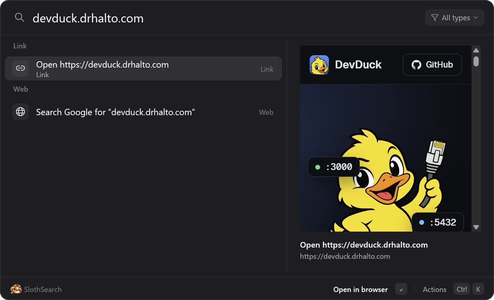
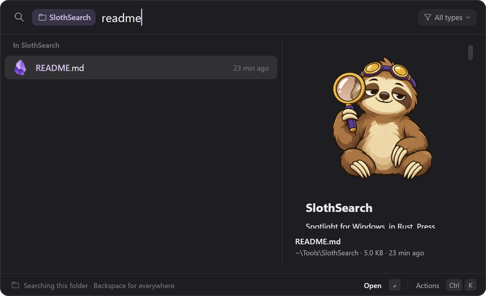
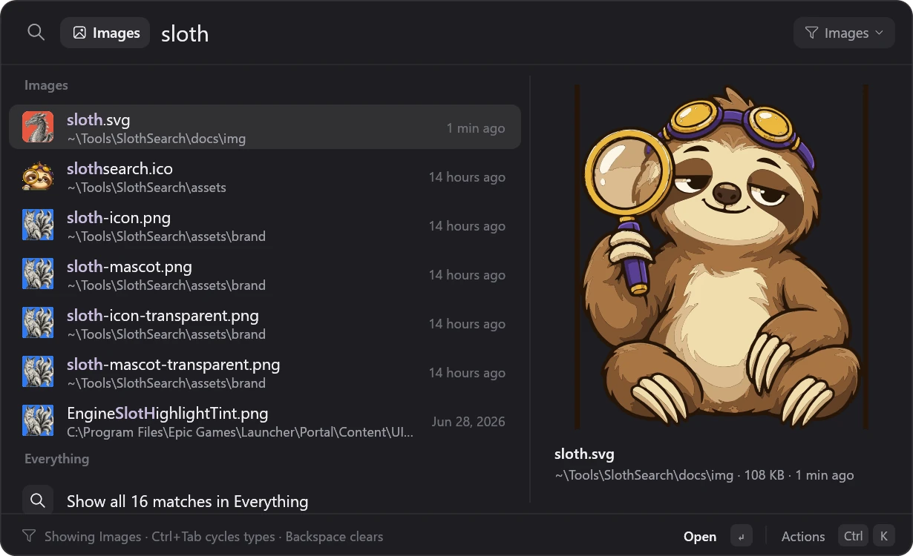
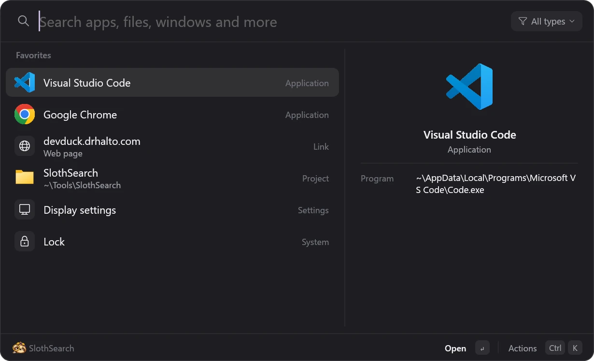
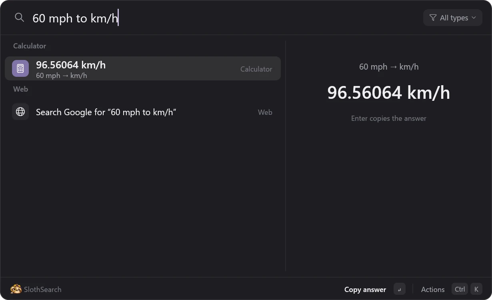
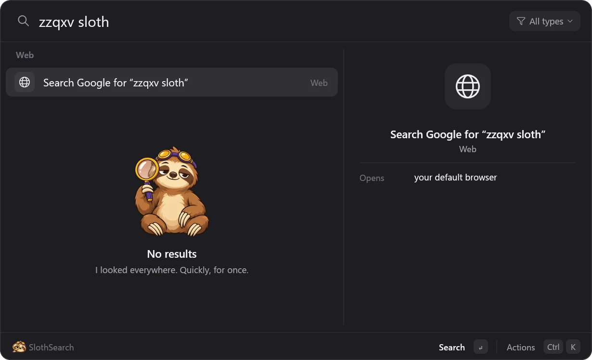

Everything on your PC, one keystroke away.
Press Alt Space and start typing. SlothSearch finds apps, every file on your disk, open windows, git repos, Settings pages and math in about 50 milliseconds. The sloth is just for show.

Type a web address and the page renders beside your results. Files get the same treatment: HTML, Markdown, PDF, images and code.
The problem
Windows search is the slow one
Three places to look for things, and none of them is quick.
Start menu
It searches the web first
Type a file name and you get web suggestions. Files outside your libraries rarely show up at all.
Explorer
Its search box crawls
It waits on the Windows Search index, and it can't be pointed at Everything, the tool that already knows every file on your disk.
Alt+Tab
You can't type into it
With twenty windows open, you scan thumbnails instead of typing the name of the one you want.
SlothSearch answers all three from one box, as you type.
Features
One box for everything you reach for
Results come back ranked as you type, with the best match on top and the reasons it matched highlighted.
Every file, instantly
Files come from Everything's index, so your whole disk answers in about 50 ms. Dependency and build folders stay out of the way.
Apps, Store apps included
Everything the Start menu lists, matched by initials too: vsc finds Visual Studio Code.
Alt+Tab you can type into
Alt ` lists your open windows in the order you used them. Type a few letters, press Enter.
Starts in your Explorer folder
Open it over an Explorer window and it searches that folder. Enter on a folder moves that same window there.
Type filters
type:pdf, type:image, type:code, or any extension. On its own, a filter lists the newest of that kind.
Favorites and recents
Ctrl D pins anything: apps, web pages, Settings pages, folders, repos. The empty box shows them first, then your last five picks.
Live previews
Text excerpts, Explorer's thumbnails, and real rendering for HTML, Markdown, SVG and PDF, with page scripts switched off.
Math and units
15% of 80, sqrt(2)*100, 60 mph to km/h, 5 GB to MB. Enter copies the answer.
Actions on everything
Ctrl K: open in VS Code or Terminal, start Claude Code in a folder, copy the file itself, run as administrator, show in Explorer.
A closer look
It does the obvious thing
Every screenshot here is the real app on a real PC.
It knows which folder you're in
Press the hotkey over an Explorer window and the search starts in that folder, shown as a chip. Backspace on an empty box searches everywhere instead.
Pick a folder and that same Explorer window goes there. Pick a Markdown file and it renders, images and all.

type:pdf, then keep typing
Type a filter and a space and it becomes a chip. Pick one from the menu at the right of the search bar, or cycle with Ctrl Tab.
Works with any extension, too: type:stl, type:blend.

A launchpad you set up
The empty box is yours: the apps, sites, Settings pages and repos you pinned, in the order you want, then whatever you opened last.
And it learns. Whatever you pick for a search ranks first for that search next time.

Answers, not just results
Arithmetic, percentages and unit conversions show up as you type. Enter copies the number.

Keys
Your hands never leave the keyboard
Every action has a shortcut, and Ctrl K lists them for whatever's selected.
| Keys | Does |
|---|---|
| Alt Space | Open or close SlothSearch |
| Alt ` | Open the window switcher |
| Enter | Open, switch to, run, or copy the answer |
| Ctrl Enter | Show in Explorer |
| Ctrl K | All actions for the selected result |
| Ctrl D | Add to or remove from Favorites |
| Ctrl Tab | Next type filter |
| Keys | Does |
|---|---|
| Ctrl E / T / L | Open in VS Code, Terminal, or start Claude Code there |
| Ctrl Shift C | Copy the path |
| Ctrl Shift F | Copy the file itself, ready to paste |
| Ctrl Shift Enter | Run as administrator |
| Alt Enter | Properties |
| Ctrl 1…9 | Open the nth result |
| Backspace | On an empty box: drop the filter, then the folder |
Install
Three steps and it's yours
SlothSearch builds from source on your machine. It runs on Windows 10 and 11.
-
Install Everything
SlothSearch gets its file results from Everything by voidtools. Install version 1.4 and leave it running; it starts with Windows.
-
Install Rust
Get rustup and take the defaults (the MSVC toolchain).
-
Build and install SlothSearch
In PowerShell:
> git clone https://github.com/drhalto/slothsearch > cd slothsearch > .\scripts\install.ps1It builds a release, installs to
%LOCALAPPDATA%\Programs\SlothSearch, starts at login, and puts a sloth in your tray. Press Alt Space.
Run the same script to update. .\scripts\install.ps1 -Uninstall removes it and keeps your settings. Hotkeys, the web search engine, theme and excluded folders live in %APPDATA%\SlothSearch\config.toml, which opens from the launcher with Ctrl ,.
Privacy
It stays on your PC
A search box sees everything you type, so here's exactly where that goes.
- No accounts, no telemetry. Nothing phones home.
- Searches stay local. File queries go to Everything on your own machine, as Windows messages.
- The network only comes up when you ask. Opening a web search, or previewing a web address you typed.
- File previews can't run code. HTML, SVG and PDF previews open with scripts off.
- Your data is plain files. Settings, history and favorites live in
%APPDATA%\SlothSearch; delete them any time.

Why a sloth?
Because a search box this fast deserved a mascot that isn't. SlothSearch answers in about 50 milliseconds; the sloth looks like he took the afternoon.
He only shows up when nothing matches, and he's honest about it.